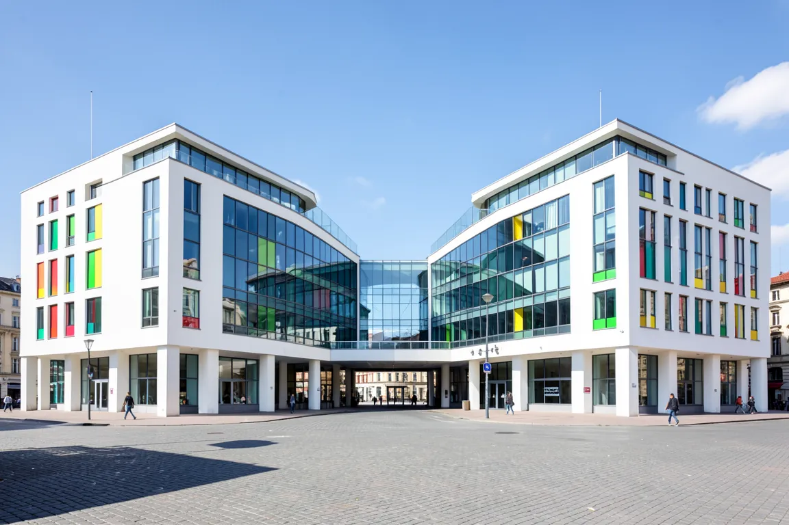

архитектура · 1919–1933 · также: Здание Баухауса, Новое строительство (Neues Bauen, линия Баухауса)
Функциональное здание из асимметричных крыльев, каждое размером по назначению, соединённых мостами и остеклённых со стороны работы. Гропиус и Мейер преподавали строительство как последний шаг мастерского образования, объединившего искусство, ремесло и промышленность.

Главная идея
Форма следует использованию: каждая функция получает свой объём, а генератор здания — план, а не фасад.
Принципы дизайна
Делите программу на отдельные крылья по функциям и задавайте размер каждого по использованию: мастерская, студия, школа, жильё.
Располагайте крылья вертушкой или буквой «Г» вокруг оси, без центральной оси и главного фасада.
Остекляйте рабочую сторону: навесная стена на всю высоту в 3–4 этажа у мастерской и ленточные окна у жилого крыла.
Держите каркас из бетона или стали, с заполнением белой штукатуркой и плоской крышей с внутренним водостоком.
Задавайте модуль по использованию: сетка 1,1–1,25 м для жилых ячеек и пролёты 5–6 м для мастерских.
Берите основной цвет только для обозначения функции, плоскими плоскостями внутри здания: красный, жёлтый и синий, плюс чёрный, белый и серый.
Антипаттерны
Симметричный фасад на одной парадной оси
Скатные крыши, щипцы и слуховые окна
Накладной орнамент, тяги и декоративная плитка
Крылья и комнаты, размеры которых заданы фасадом, а не использованием
Формы плана, скрывающие функцию каждого объёма
Грубые, ручной фактуры или историцистские поверхности